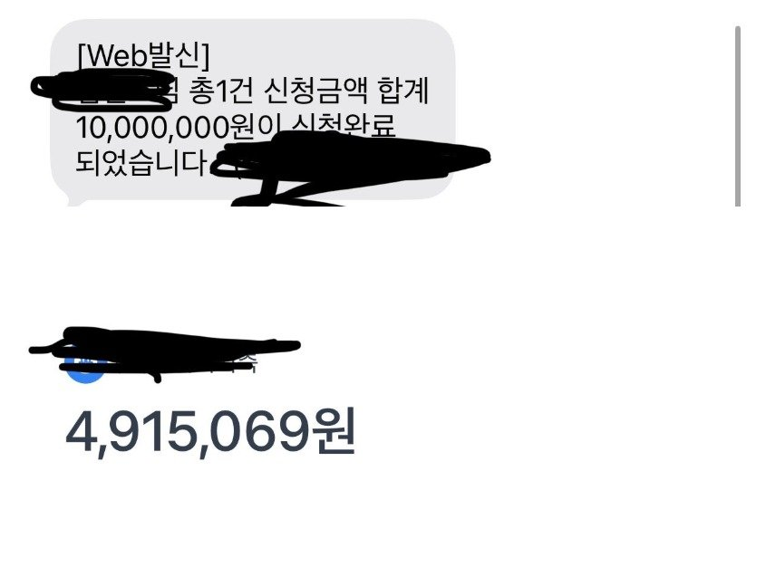

[개인회생 직장인 대출] 신규대출 받은지 얼마 안돼서 안될줄 알았는데 직장인 대환으로 성공 / 조영우 이사와의 대출후기
의류판매업/3개월,세후 240/기대출 2,600/ 개인회생 21회차 납부(총60회차)

신규대출 받은지 얼마 안돼서 안될줄 알았는데 직장인 대환으로 성공했습니다!
대부 대환하고 여유금도 확보했네요 ㅜㅜ 빠른 진행 감사합니다!
https://cafe.naver.com/cityman88/310717